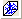
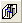
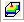
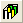
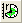
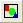

関連する動画は等高線とカラーマップをご覧ください。
関連する動画は等高線とカラーマップをご覧ください。
 関連する動画は等高線とカラーマップをご覧ください。
関連する動画は等高線とカラーマップをご覧ください。
Originの3Dグラフツールバー(ワークシートアクティブ時)
Originの3Dグラフツールバー(行列アクティブ時)
Originは、さまざまな 3D XYZおよび 3D曲面図 をサポートしており、そのすべては3Dおよび等高線ツールバーで1つに分かりやすくまとめられています。
作図するのははすばやく簡単です。目的のXYZ列または行列データを選択し、グラフの種類ボタンをクリックします。グラフの回転とサイズは、特定の値を指定するかグラフィカルに更新されます。3Dグラフの他の属性は、グラフ内のオブジェクトをダブルクリックすれば、そのオブジェクトに関連するダイアログボックスを開きます。
Originの基本的な3DグラフはOriginワークシートから作成し、3D曲面図は行列から作成するので、下図のように、アクティブなウィンドウによって 3Dグラフツールバーの選択できるボタンが異なります。
以下の表は、Originが提供しているXYZ散布図や3Dワイヤフレームなど、組み込みのすべての3D XYZグラフおよび曲面図を表示しています。これらのグラフ形式について詳しく学ぶには3D XYY グラフ、3D XYZ グラフ、3D 曲面グラフページを確認してください
| |
3D散布図は、データが矩形のグリッドに配置されないときにしばしば使われます。単純な3D散布図は、各データに対応するオブジェクトまたはマーカーを表示します。より複雑な散布図グラフには、特定のマーカー属性、垂線、散布図データとフィット曲面など追加オブジェクトの組み合わせなどがあります。 |
| |
トラジェクトリプロットは、3変数の比較を表す3変数プロットで、1つは各軸に沿って測定されます。プロットは、すべての平面への射影するようにもできます。実際のデータと各射影データの設定は、独立して編集することができます。これには、折れ線、シンボル、ドロップラインの設定があります。 |
| |
選択したXYZZデータを3D散布図＋エラーバーにプロットします。 |
|
選択したXYZXYZデータを3Dベクトルにプロットします。 | |
|  |
選択したXYZdxdydzデータを3Dベクトルにプロットします。 |
| |
選択したXYZZデータを3D3点図にプロットします。Z列数は2の倍数になります。Z-Zペアがレイヤでグループ化され、プロットシンボルの境界色が増大します。 |
|  |
3D棒グラフは、ワークシートから作成でき、そのXYY値を視覚化します。各棒の高さは、棒のXY座標に対応する元のワークシートの2番目のY値を表します。 |
| |
3D積み上げ棒グラフはXYYワークシートデータから作成できます。同じZ値の全てのY列はY方向に積み上げられます。 |
| |
3D100％積み上げ棒グラフはXYYワークシートデータから作成できます。同じZ値の全てのY列はY方向に積み上げられ、全体の長さはY軸範囲の全体を満たすように正規化されます。 |
| |
ワークシートのXYY値を持つ3Dリボングラフを作成します。各リボンの高さは、リボンのXY座標に対応する元のワークシートの2番目のY値を表します。 |
| |
ワークシートのXYY値を持つ3Dウォールグラフを作成します。各ウォールの高さは、ウォールのXY座標に対応する元のワークシートの2番目のY値を表します。 |
| |
ワークシートのXYY値を持つ3Dウォータフォールグラフを作成します。各データは標準は折れ線ですが、指定されたZ次元のパラメータで並べられています。 |
| |
ワークシートのXYY値を持つ3Dウォータフォールグラフを作成します。各データは標準は折れ線ですが、指定されたZ軸方向のパラメータで並べられています。カラーマップはY次元に適用されています。 |
| |
ワークシートのXYY値を持つ3Dウォータフォールグラフを作成します。各データは標準は折れ線ですが、指定されたZ軸方向のパラメータで並べられています。カラーマップはZ次元に適用されています。 |
| |
行列値から3D色付き曲面図を作成します。各行番号に対応づけられたY座標、列番号に対応づけられたX座標に対応して、行列の要素をZ値として曲面のグリッドポイントのXYZ座標が決められます。 |
| |
等間隔X色付き曲面図は、色付き曲面図を作成するときに、X軸に平行にグリッド線を表示します。 |
| |
等間隔Y色付き曲面図は、色付き曲面図を作成するときに、Y軸に平行にグリッド線を表示します。 |
| |
3Dカラーマップ曲面は3変数のプロットで、3つの測定値の比較を表します。3Dカラーマップ曲面図の各サブセット、レベル、Z値(ユーザによる定義)は、異なる塗り色で表し、各レベル間の等高線を表示することで、異なる線を引くことができます。 |
| |
エラーバー付き3D色付き曲面図を作成します。 |
| |
エラーバー付き3Dカラーマップ曲面図を作成します。 |
| |
複数の色付き曲面を作成し、色をさまざまに変化させることができます。 |
|  |
複数のカラーマップ曲面を作成し、色をさまざまに変化させることができます。 |
| |
行列データに対して、3Dワイヤフレームグラフを作成します。そのZ値は、XYグリッド線を決定します。 |
| |
ワイヤ曲面グラフに対して、行列のZ値は、XYグリッド線の曲面を決定し、2番目の線はグリッド間に置かれます。 |
|  |
XYZデータや行列から3D棒グラフを作成できます。各棒の高さは、棒のXY座標に対応する元のワークシートXYZや行列のZ値を表します。データの傾向を素早く表示し、Z値がXYデータでどのように変化するかを示します。 |
| |
3D積み上げ棒グラフはXYZZ.../XYZXYZ...データや複数オブジェクトの行列から作成できます。XYZデータについては、同じXY座標の全てのZ値が、累積して積み上げられます。行列データについては、現在の行列にあるすべてのオブジェクトが、累積して積み上げられます。 |
|
3D100％積み上げ棒グラフはXYZZ.../XYZXYZ...データや複数オブジェクトの行列から作成できます。XYZデータについては、同じXY座標の全てのZ値が、累積して積み上げられます。行列データについては、現在の行列にあるすべてのオブジェクトが、累積して積み上げられます。それぞれの積み上げ棒グラフの全体の長さは、Z 軸軸範囲全体で満たされるように正規化されます。 | |
| |
行列の3D散布図を作成します。 |
| |
行列の3D散布図+エラーバーを作成します。 |
| |
投影付き3Dカラーマップ曲面図を作成します。 |
ワークシートアクティブ時のOriginの3Dグラフツールバー、等高線フライアウトメニュー
行列アクティブ時のOriginの3Dグラフツールバー、等高線フライアウトメニュー
Originには等高線グラフ/等高線テンプレートがいくつかあります。等高線グラフを作成するには、3Dグラフツールバーを使って、1クリックで行うことができます(下記参照)。
Originの等高線グラフは、塗り色またはパターンを等高線に適用する機能があり、等高線のレベルを調整するだけでなく、等高線(等位の線)および等高線ラベルを表示します。カラースケールオブジェクトは、凡例として等高線図に含めることができます。等高線ラベルは、マウスクリックで、グラフィカルに等高線に接続することができます。
より高度な設定を使えば、XYZ等高線(三角法を使ってXYZデータから作成)が、その境界線をデータセットを使って適用することができます。
次のリストは、Originが提供している組込み等高線プロットです。リスト内の等高線図のテンプレートについて詳しく学ぶには等高線図ページを参照してください。
| |
色塗りのカラーマップと等高線塗りつぶしを使う等高線プロット |
| |
等高線と等高線ラベルを含む白黒の等高線(色塗りなし) |
| |
色塗りをグレーカラーマップとXYグリッド塗りつぶしする等高線プロット |
| |
行列データの水平、垂直、自由な線を動的に作成します。このグラフの種類は、地形標高データや電磁気の分野のデータを視覚化したり、分析するのに使うことができます。 |
|  |
極座標等高線図はXYZデータと行列データの両方から作成できます。XYZデータでは、Xは角度(単位は度)、Yは半径、Zは等高線を決定する値です。行列データでは、XとYの座標は角度(単位は度)と半径をそれぞれ表します。 |
| |
極座標グラフに表示する等高線で、rはXデータ、θはYデータ、ZはZデータです。 |
| |
選択したXYZデータを三点グラフの等高線にプロットします。 |
|
行列/仮想行列のデータをヒートマップにプロットします。 | |
|
行列/仮想行列のデータをラベル付きヒートマップにプロットします。 |
Originには、2つの組み込みのイメージグラフがあります。これらのイメージグラフにアクセスするには、 3Dグラフツールバーを使って、1クリックでアクセスできます(下記参照)。
次のリストは、組込みのイメージプロットおよびOriginで提供しているイメージヒストグラムを表示します。リンクがボタンの右に現れていれば、それをクリックし、そのグラフについての詳細を見ることができます(またはグラフの種類ボタンをクリック)。
|  |
行列データをイメージグラフとしてプロットできます。イメージグラフはxy軸にイメージを表示します。プロットしたら、必要に応じてグラフに注釈を付けます。 |
| |
画像データを素早く分析し、プロファイルを生成します。水平、垂直、自由な直線を使用して、画像データのプロファイルを表示することができます。 |